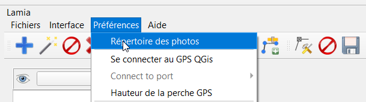
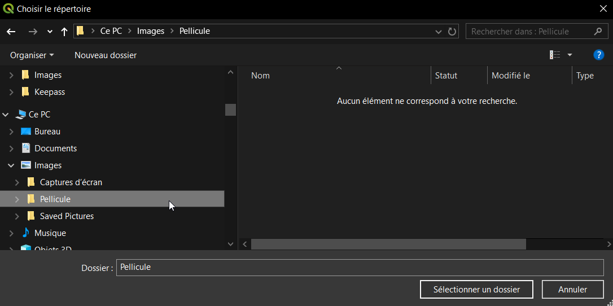
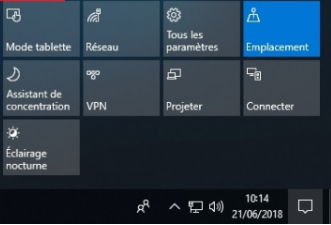
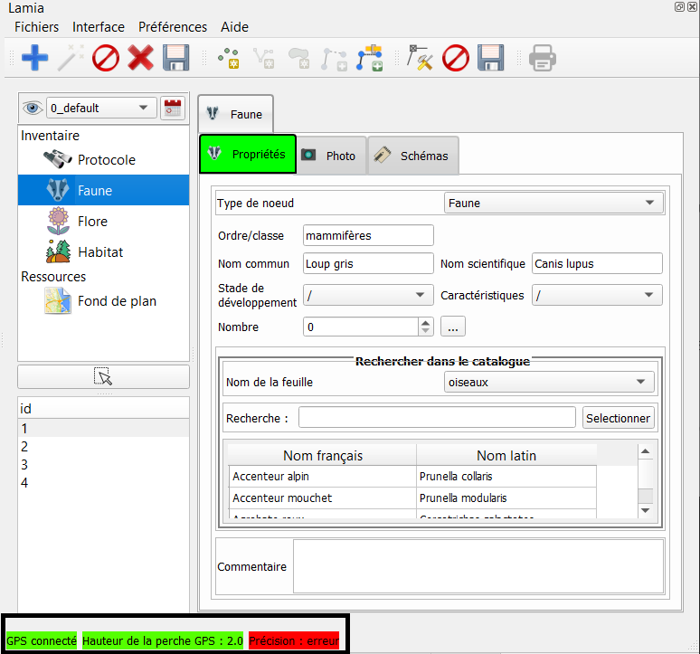
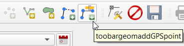
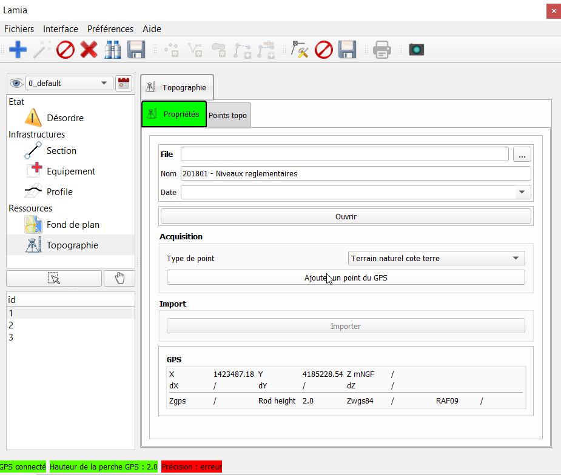
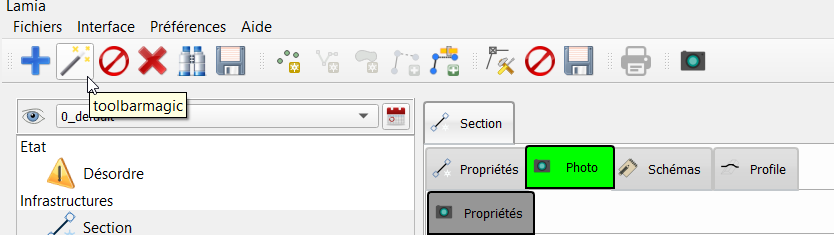

Prise en main rapide - premiere utilisation « sur le terrain »¶
Avertissement
Il faut avoir au préalable lu la section précédente « première utisation au bureau «
Définition du répertoire de photo par défaut¶
En cas d’utilisation de l’appareil photo de la tablette, il est possible de rapatrier automatiquement la dernière photo prise avec l’appareil photo. En revanche, il faut dire à Lamia où se situe le répertoire on sont stockées les photos.
Pour ce faire, dans la fenètre Lamia, aller dans Préférences/Répertoire Photo et choisir le répertoire où sont stockées les photos prises avec la tablette. Classiquement, elles sont dans CePC\Images\Pellicule :
 Ensuite, lors de l’utilisation du bouton « Baguette magique » dans la barre d’outil (à côté du +), et lorsque vous êtes dans l’onglet « Photographie », Lamia créera automatiquement un nouvelle photo avec la dernière photo prise. Si en plus vous êtes connecté au GPS (Cf. ci après), la photo se localisera automatiquement là où vous êtes.
Utilisation d’un GPS¶
QGis et Lamia peuvent fonctionner avec un GPS.
Je connecte le GPS de la tablette
Je vais dans le centre de notification Windows 10 et j’active le GPS (« Emplacement doit devenir bleu)
1bis. Je connecte un GPS centimétrique
Il s’agit dans un premier temps de configurer le GPS pour qu’il envoit des données GPS de type « GGA » et « GST » (Pour ce faire, voir la doc fournisseur du GPS, se connecter en wifi à la configuration du GPS , cherche l’onglet de configuration des messages « NMEA » envoyés).
Aussi, le PS doit avoir le bluetooth activé et doit pouvoir envoyer ces informations par bluetooth.
Enfin, il s’agit de connecter la tablette au GPS via la connection bluetooth.
Je configure la hauteur de ma perche dans le cas de l’utilisation d’un GPS centimétrique.
Dans le menu Lamia, aller dans Préférences/Hauteur de perche et saisir la hauteur de la perche GPS.
Connecter QGis au GPS
Dans Qgis, aller dans le menu Vue/Panneau et cliquer sur information GPS. Un panneau apparaîtra permettant de connecter Qgis au GPS. Clicker sur connecter. Le petit rectangle grisé en haut à droite passe au vert lorsque la connection avec le GPS est établie.

Connecter Lamia à QGis.
Dans les menus Lamia, aller dans Préférences/se connecter au GPS pour connecter Lamia au Gps reconnu par Qgis.
Si le GPS est opérationnel, en bas de la fentre Lamia GPS connecté apparaît en vert.
Il redevient rouge si Lamia perd le signal GPS.
Utilisation des fonctions GPS dans Lamia¶
Saisie d’un point GPS ou rajout d’un point GPS à une ligne¶
Il suffira de cliquer sur le bouton suivant pour effectuer cette action :
Utilisation du module « Levés topographiques »¶
Il est possible de réaliser des levé topographiques de précision centimétrique avec Lamia. Pour réaliser cela, les étapes sont :
Connecter le GPS centimétrique à Lamia
Cf. Utilisation d’un GPS dans cette page
Se rendre dans l’onglet « Topographie »
Créer une nouvelle campagne topographique (icone + et renseigner les champs).
Saisir un repère de nivellement GPS
Ce point est primordial si l’on veut être certain de la fiabilité des données GPS relevées.
Se rendre sur le (site de l’IGN) et rechercher le point de nivellement le plus proche du secteur de travail.
Ensuite réaliser un levé avec la procédure décrite dans l’étape 4 et s’assurer du bon fonctionnement du GPS.
Saisir les points voulus avec le GPS.
Selectionner le type de point voulu et cliquer sur « Ajouter un point GPS ». C’est tout !
Le point est stocké dans les points associés à la campagne topographiques, qui sont consultables en allant dans l’onglet “Points topos”.
Note
lors de l’utilisation d’un GPS centimétrique, s’assurer que la précision affichée lors de la saisie du point correspond bien à la précision voulue.
Export des points en .dxf
A la fin de la campagne topographique, il est possible d’exporter l’ensemble des points relevés en cliquant sur le bouton « Export en DXF ». Le fichier dxf créé se situe dans le répertoire du projet Lamia.
Ajouter une photo¶
Quand le GPS est connecté, la prise de photo s’effectue selon le déroulé suivant :
Ouvrir l’appareil photo en cliquant sur l’icone suivante :
Prendre la photo
Intégrer la photo à Lamia
Se rendre sur l’onglet photo de l’élément auquel on souhaite ratacher une photo et cliquer sur l’icone baguette magique comme ci-dessous :
Ce click a pour effet de :
créer la nouvelle photo
la localiser à l’emplacement GPS actuel
Prendre la derniere photo prise
Enregistrer la photo.

{kind=link}
{kind=link}
{kind=link}
{kind=link}
{kind=link}
{kind=link}
{kind=link}
{kind=link}